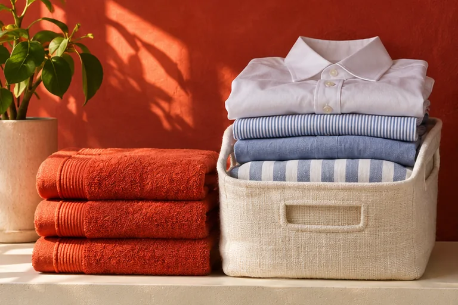

Uma semana no cesto.
Separe as roupas do dia a dia e as da casa. Registre o peso aproximado de cada grupo para conversar com a lavanderia.
Montar meu cesto
O que vai no cesto?
Preencha apenas os grupos que quer incluir. Use 0 para os demais.